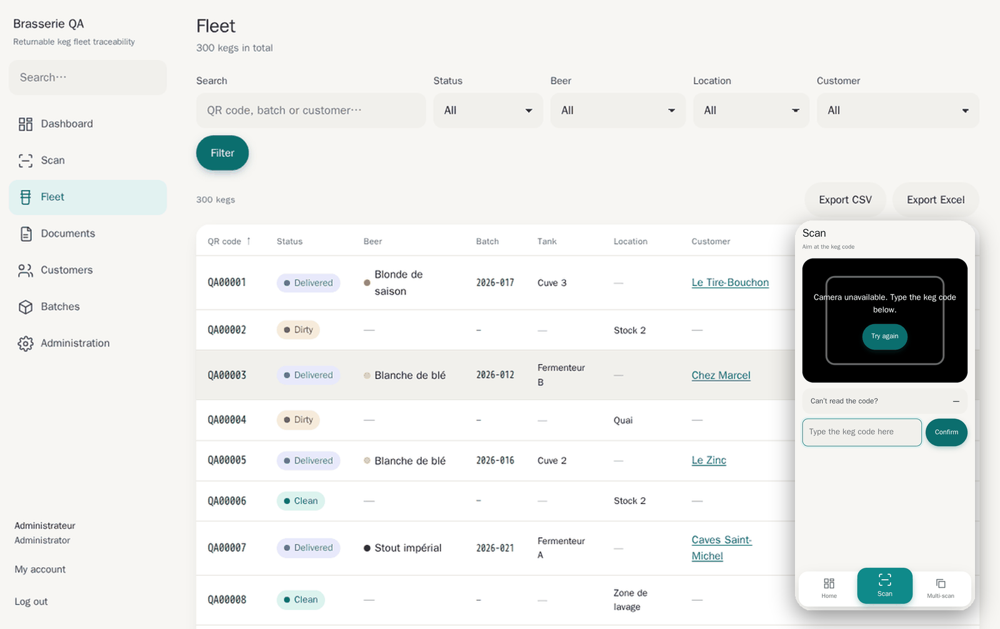

Keg Tracking
QR-code traceability for returnable beer kegs, offered as SaaS to breweries. Every keg carries a QR label and every field operation is a scan.

QR-code traceability for returnable beer kegs, offered as SaaS to breweries. Every keg carries a QR label and every field operation is a scan.
